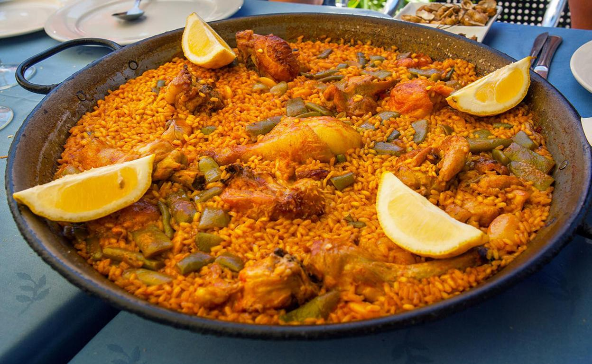

Ingredientes (4-6 personas)
| Producto | Cantidad |
|---|---|
| aceite de oliva | 100g |
| pollo | 400g |
| conejo | 400g |
| judias verdes | 250g |
| garrofón fresco | 100g |
| conejo | 400g |
| diente de ajo | 1 |
| tomate maduro | 100g |
| pimenton dulce | cucharita rasa |
| agua | |
| hebras de azafrán | 32 |
| arroz redondo | 400g |
| sal | una pizca |
| ramita de romero | (opcional) |

Elaboración
1)Empezamos nivelando la paella. A continuación, añadimos sal por toda la superficie. Con esto conseguimos que no salpique el aceite cuando esté caliente. Con el fuego al mínimo, empezaremos a sofreír las carnes (conejo, pollo).2)Una vez tengamos la carne bien sofrita, la retiramos a los laterales de la paella. y luego empezamos a añadir las verduras y sofreírlas durante 2 min aproximadamente.
3)Una vez sofrita la verdura, le añadiremos un diente de ajo bien picado y el tomate rallado.
4)Luego, Añadimos el pimentón dulce y sofreímos durante 1min aproximadamente.
5)A continuación, añadimos el agua a la paella, comenzando por la medida que el arroz necesita para su perfecta cocción. Una vez tengamos la medida cogida, le añadiremos el doble de agua de la medida anterior para poder realizar el caldo en la paella.
6)Subimos el fuego a tope hasta que comience a hervir el agua y lo dejamos unos 10 minutos. Pasado este tiempo, bajamos el fuego a la mitad y lo dejamos que vaya reduciendo poco a poco hasta la señal.
7)Es recomendable un poco de caldo en un recipiente por si tenemos que añadirle al arroz durante su cocción.
8)Durante la realización del caldo, lo iremos dejando en su punto de sal. Aquí es donde añadimos también las ramas de romero para después sacarlas.
9)Una vez hecho todo esto, será el momento de añadir el arroz. Repartimos el arroz muy bien por toda la paella y subimos el fuego a tope durante los primeros 8 minutos de cocción. Después lo bajaremos al mínimo durante 10 min más aproximadamente. El tiempo dependerá de la variedad de arroz que utilicemos. Pasado el tiempo de cocción, apagamos el fuego y la dejaremos reposar durante 5 min.